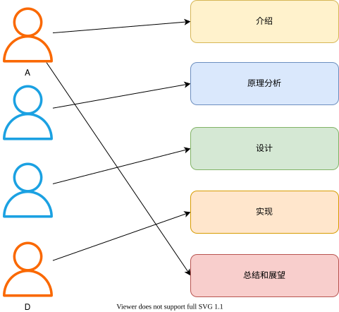

Version Control
This post talks about version control and version control systems.
Version Control
During college, we often work on major assignments as a team — for example, writing a small compiler. These assignments typically require a written report as well.
Team members: A, B, C, D
Report structure: Introduction, Principle Analysis, Design, Implementation, Conclusion and Outlook
Division of work:
A: Write the Introduction and Conclusion/Outlook sections, and merge the final report
B: Write the Principle Analysis section
C: Write the Design section
D: Write the Implementation section

To maintain a consistent style — such as heading fonts and body fonts — and to let everyone work on their sections independently without waiting on each other, we first create a template. Then A, B, C, and D each fill in their own content based on that template. At this point we have a single Word file, which we’ll call homework-v0.docx.
When B starts writing the Principle Analysis section, he first gets the file from A, then copies homework-v0.docx and names the copy homework-v0.1.docx. He begins his work in the new file and saves it when done. After a review, he finds a few small issues to fix, so he copies homework-v0.1.docx and names it homework-v0.2.docx.
Once B finishes his section, it’s time to merge B’s work back into the template. He copies homework-v0.docx as homework-v1.docx, inserts B’s content into the new file, and saves it — producing the v1 version of the report.
At this point, we have two files:
1 | homework-v0.docx |
What is the difference between v0 and v1? v1 adds new content on top of v0, while v0.1 and v0.2 above each modified some existing content. We call these modifications changes. In the example above, we managed and tracked versions — and therefore managed and tracked changes — simply by copying files.
This is just one way to implement version control, and the simplest one at that. Next, let’s talk about version control systems.
Version Control Systems
A version control system is a tool used to manage and track changes. The changes it tracks are not limited to code — they can apply to documents or other engineering files as well.
Local Version Control Systems
Relying on copying files is error-prone: it’s easy to accidentally write to the wrong file or overwrite something you didn’t intend to.

This gave rise to local version control systems, which typically use a database to record the differences between successive versions of a file. Local VCS represents the first generation of version control systems, with Revision Control System (RCS) as its most notable example. RCS works by storing patches (the differences between file versions) on disk in a special format, then reconstructing any point-in-time version of a file by applying those patches.
Centralized Version Control Systems
A natural problem that arises when using local version control systems is how to collaborate with other developers.

This led to centralized version control systems — the second generation of VCS. Compared to local VCS, they offer the following advantages:
- Project transparency. Team members can see what others on the project are doing.
- More precise access control. A CVCS administrator can define who is allowed to do what.
- Easier administration.
Of course, there are drawbacks as well. The biggest is the single point of failure. Day-to-day development collaboration relies heavily on the central server; if that server goes down, team members cannot collaborate. If the server’s disk is corrupted with no backup, the entire history could be lost.
Representative tools include CVS and Subversion (SVN).
Distributed Version Control Systems
In a distributed version control system, each client does not merely check out the latest snapshot — it mirrors the entire repository, including its full history. If a server goes down, any client’s copy of the repository can be used to restore it.

Distributed version control systems, also known as third-generation VCS, include BitKeeper, Git, Monotone, darcs, and Mercurial. Git is currently the mainstream choice.
The sections above on local, centralized, and distributed version control systems are largely drawn from the official Git website, covering only a portion of the content — please refer to the official documentation for full details.
Why Do We Need Version Control Systems
- Collaboration. In a multi-person project, team members can contribute code more easily and adopt others’ contributions more quickly and efficiently.
- Version storage. Every version of the codebase is preserved.
- Rollback. Because versions are stored, you can quickly revert to any previous version.
- Change history tracking. You can clearly see who made what change, when, and exactly what was changed across the entire codebase.
- Backup. Backup is an excellent built-in feature of distributed VCS — every team member holds a complete copy of the codebase, so recovery is fast even if the server goes down.